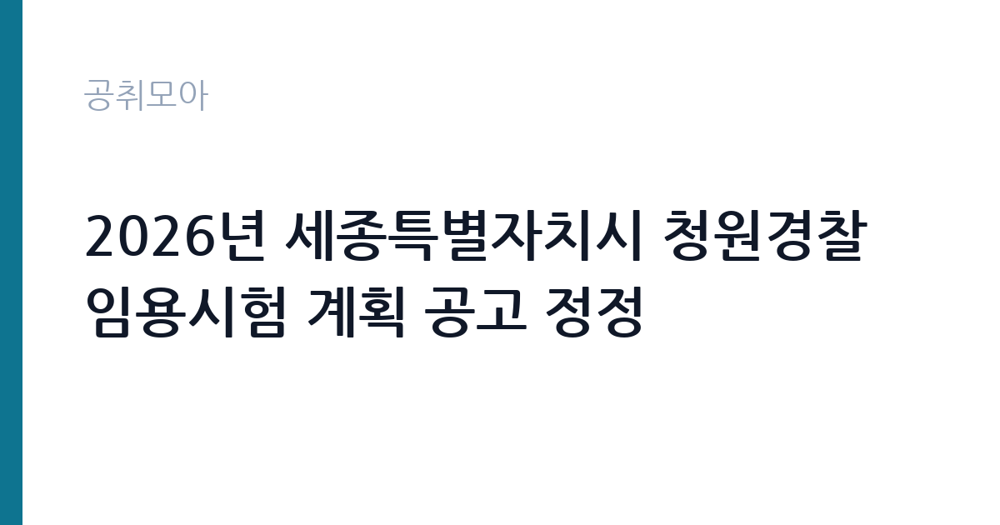

[지자체] 2026년 세종특별자치시 청원경찰 임용시험 계획 공고 정정
세종특별자치시 · 세종 · 마감 2026-10-02 (D-8) · 출처 나라일터

한눈에 보는 모집 조건
| 기관 | 세종특별자치시 |
|---|---|
| 공고명 | 2026년 세종특별자치시 청원경찰 임용시험 계획 공고 정정 |
| 고용형태 | 정규직 |
| 근무지 | 세종 |
| 게시일 | 2026-09-23 |
| 마감일 | 2026-10-02 (D-8) |
지원자격, 이렇게 읽으세요
- 청원경찰 2명
- 접수 ~2026-10-02 마감
- 세부 조건은 원문 공고문 확인
청원경찰 임용시험의 응시 자격은 연령과 신체 조건, 결격사유 위주로 정해집니다. 만 18세 이상이면 학력 제한 없이 지원하는 경우가 많습니다. 체력검정과 신체검사가 포함되므로 시력과 청력, 사지 상태 같은 기준을 미리 확인하시기 바랍니다. 군 복무 경력은 봉급 산정 때 경력으로 산입될 수 있어 제대군인에게 유리합니다. 정정공고에서 응시자격이나 가산점, 제출 서류가 바뀌었을 수 있으니 기존 공고만 보고 준비하셨던 분은 변경사항을 반드시 다시 확인하시기 바랍니다.
이 공고의 포인트
이 공고의 포인트는 세 가지입니다. 첫째, 공무원 신분의 안정성입니다. 청원경찰은 정년이 보장되고 봉급표가 법령에 정해져 있어 예측 가능한생애를 설계할 수 있습니다. 둘째, 2026년 초임 보수가 명확합니다. 청원경찰법 시행령 별표1에 따라 1호봉 월 봉급이 213만3천원으로 정해져 있고, 여기에 수당이 더해집니다. 셋째, 정정공고라는 점입니다. 정정으로 조건이 바뀌면 기존 준비자가 이탈해 경쟁이 완화되기도 합니다. 변경 내용을 정확히 파악한 분께는 오히려 기회가 될 수 있습니다. 세종시 근무를 희망하는 분이라면 놓치지 마시기 바랍니다.
전형은 어떻게 진행되나
청원경찰 임용시험은 보통 서류와 체력, 면접 단계로 진행됩니다. 필기시험 없이 서류심사와 체력검정, 면접시험으로 뽑는 경우가 많습니다. 체력검정은 달리기와 팔굽혀펴기, 윗몸일으키기 같은 종목으로 구성되니 지금부터 체력을 끌어올리시기 바랍니다. 면접에서는 청원경찰의 역할 이해와 상황 대처 능력을 평가합니다. 정정공고에서 시험 과목이나 일정이 바뀌었을 수 있으니 원문 공고문의 시험 방법과 일정을 처음부터 다시 읽어보시기 바랍니다. 접수 마감은 10월 2일입니다.
이런 분께 추천해요
- 군 복무를 마치고 안정적인 공직 일자리를 찾는 제대군인에게 추천합니다.
- 체력에 자신 있고 교대나 외근 근무가 가능한 분께 잘 맞습니다.
- 세종시에 거주하시거나 근무가 가능한 분께 좋은 기회입니다.
지원 전 체크리스트
- 정정공고의 변경사항을 기존 공고와 대조해 확인했습니다.
- 체력검정 종목과 합격 기준을 확인하고 훈련을 시작했습니다.
- 신체검사 기준과 결격사유를 미리 점검했습니다.
- 접수 방법과 마감 시각을 확인하고 여유 있게 접수했습니다.
모집 일정과 제출 타이밍
원서 접수 마감은 2026년 10월 2일입니다. 정정공고가 9월 23일에 나온 만큼 접수 기간이 촉박할 수 있으니 서둘러 준비하시기 바랍니다. 체력검정과 면접, 신체검사 일정은 원문 공고문에 안내되어 있습니다. 체력은 단기간에 오르지 않으므로 접수와 동시에 훈련을 시작하시기 바랍니다. 최종합격 후 임용 시기와 배치 기관도 공고문에 명시되어 있으니 지원 전에 확인하시기 바랍니다.
직무 이해하기: 지자체
청원경찰은 국가기관과 지방자치단체, 공공단체의 시설을 경비하고 질서를 유지하는 일을 합니다. 청사 출입 통제와 순찰, 민원인 안내, 비상 상황 초동 대처가 주요 업무입니다. 경찰공무원과는 다른 제도로, 청원경찰법과 그 시행령을 적용받습니다. 교대근무와 야간근무가 포함될 수 있어 규칙적인 생활 리듬 관리가 필요합니다. 제복을 입고 근무하며, 제복과 장구는 청원주가 지급합니다. 장기 근속하면 호봉과 재직기간에 따라 봉급이 오르는 구조입니다.
자기소개서 작성 팁
청원경찰 채용은 자기소개서보다 체력과 면접이 당락을 가르는 경우가 많습니다. 자기소개서를 요구한다면 군 복무나 경비, 안전 관련 경험을 중심으로 쓰시기 바랍니다. 책임감과 준법 정신을 보여주는 구체적인 일화를 넣으시면 설득력이 높아집니다. 세종시에 지원한 이유와 장기 근속 의지를 명확히 밝히시기 바랍니다. 짧아도 진심이 담긴 문장이 긴 미사여구보다 좋은 평가를 받습니다.
면접 준비 포인트
면접에서는 청원경찰의 역할 이해와 돌발 상황 대처 능력을 중점적으로 봅니다. 청사 침입자나 민원인과의 충돌 같은 상황을 제시하고 대응을 묻는 경우가 많으니 원칙에 따른 단계별 대처를 정리해 가시기 바랍니다. 야간과 휴일 근무, 교대근무에 대한 각오를 묻는다면 명확하게 가능하다고 답하시기 바랍니다. 청렴과 친절에 대한 질문에는 공직자로서의 자세를 단호하게 밝히시기 바랍니다.
급여·근무조건 읽는 법
보수는 법령에 명확히 정해져 있습니다. 청원경찰법 시행령 별표1에 따라 2026년 국가와 지방자치단체 청원경찰 1호봉 월 봉급은 213만3천원입니다. 기본급 연 환산액은 약 2,559만6천원이며, 여기에 각종 수당이 더해져 실제 월 보수가 정해집니다. 호봉이 오르면 봉급이 오르고, 같은 호봉이라도 재직기간 구간에 따라 금액이 달라지는 구조입니다. 군이나 의무경찰 복무 경력은 취업규칙에 특별한 규정이 없으면 봉급 산정 경력에 산입됩니다. 야간과 휴일 근무가 있으면 수당이 붙어 실수령액이 올라갑니다. 정확한 수당 체계와 초임 호봉 획정 기준은 원문 공고문에서 확인하시기 바랍니다. 경쟁률과 합격선은 공개되지 않았습니다.
자주 묻는 질문
- 정정공고에서 무엇을 확인해야 합니까?
시험 일정과 인원, 응시자격, 제출 서류 같은 핵심 조건의 변경 여부를 확인하시기 바랍니다. 정정 전 공고만 보고 준비하면 낭패를 볼 수 있으니 원문 공고문을 처음부터 다시 읽어보시기 바랍니다. - 경찰공무원과 같은 대우를 받습니까?
별도 제도입니다. 봉급표의 일부 금액이 경찰공무원과 비슷하지만, 청원경찰법 시행령 별표1이라는 별도 봉급표와 근무처별 수당 기준을 적용받습니다. 임용 신분과 승진 체계도 다릅니다. - 군 경력이 인정됩니까?
청원경찰법 시행령 제11조에 따라 취업규칙에 특별한 규정이 없으면 군 복무 경력이 봉급 산정 경력에 산입됩니다. 실제 인정 방식은 세종시 규정과 공고문을 확인하시기 바랍니다.
함께 보면 좋은 공고
[지자체] 2026년도 제1회 해남군 시간선택제임기제공무원 경력경쟁채용시험 시행계획 재공고 — 마감 2026-10-08[지자체] 2026년 제1회 함안군의회 임기제공무원(정책지원관) 채용 공고 — 마감 2026-10-07[지자체] 2026년 제4회 진주시 임기제공무원 임용시험 계획 재공고 — 마감 2026-10-08출처: 나라일터 공개정보를 바탕으로 공취모아가 정리한 안내글입니다. 모집 조건·일정은 변경될 수 있으니 지원 전 반드시 원문 공고문을 확인하세요. 본 글은 정보 제공용이며 합격을 보장하지 않습니다.